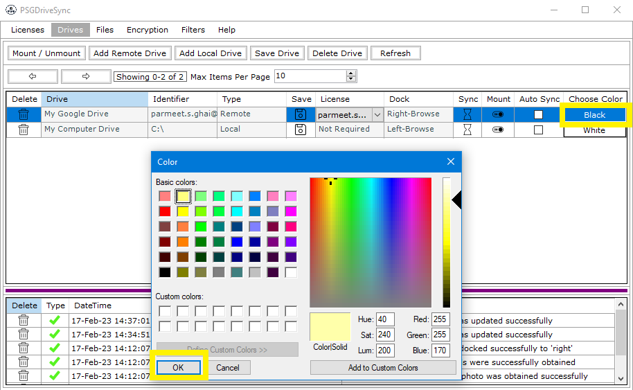
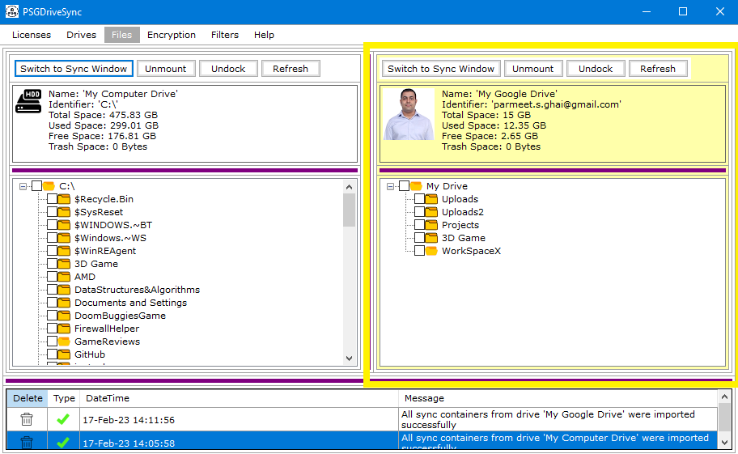

Assigning a color to a drive is a totally optional step and is meant to help distinguish drives from one another based on their assigned background colors. This is a property that is part of this application alone. Assigning a color to a drive saved in this application will not so the same on google drive's interface or Windows operating system file explorer application.
|
1 |
In order to assign a color to your drive, you need to select the drive first and then click on the box labelled as "Choose Color". Doing so will
make a "Color Chooser" window pop open. You can go ahead and select any color of your choosing and click on "ok" inside the color chooser window.
|
 |
|
2 |
You can dock the drive first and verify that the drive color has changed in the "Files" window. |
 |